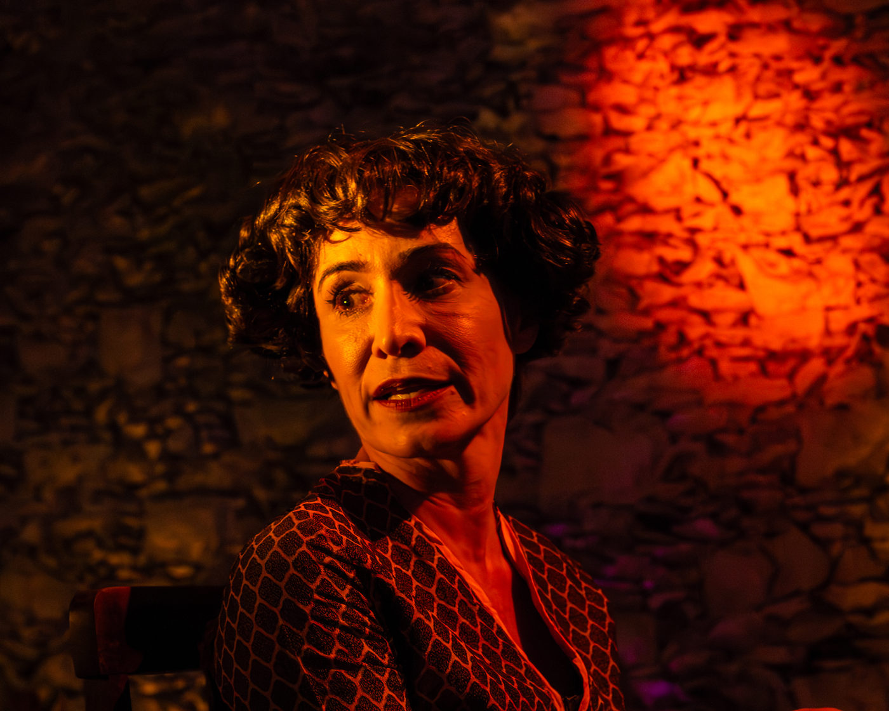
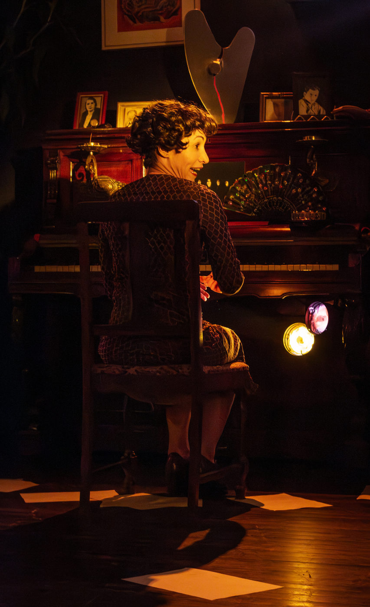
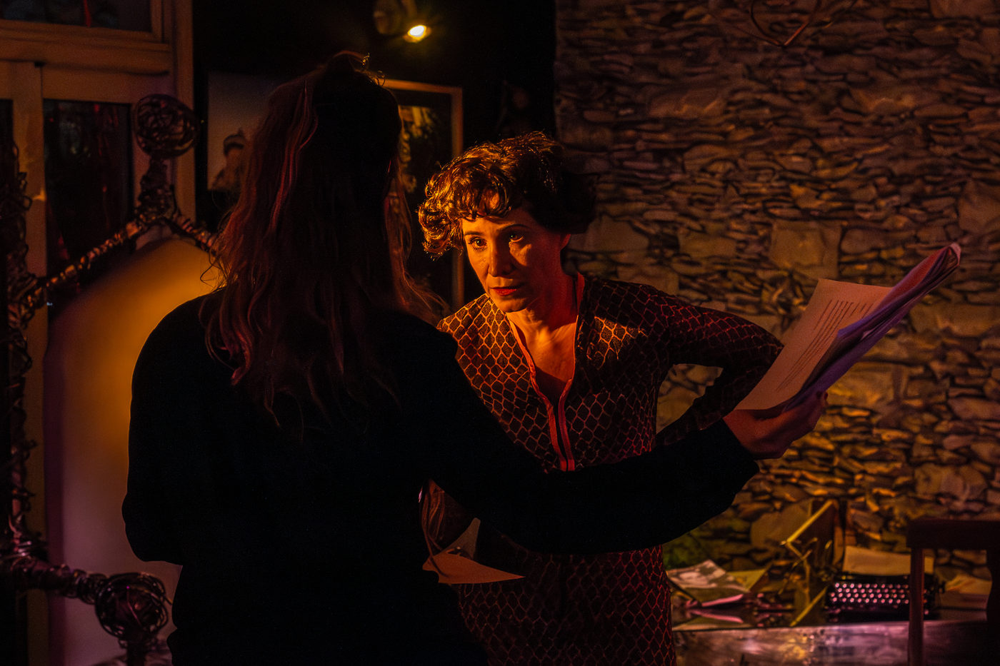

A Origem dos Projetos

Fomos convidadas recentemente para fazer uma nova apresentação do nosso solo Alice, retrato de mulher que cozinha ao fundo. Digo nosso, porque obviamente, apesar de estar só em cena, ele é tão meu quanto das parceiras Malú Bazán e Marina Corazza. Esse solo começou a ser gerado, desejado e pensado em 2011. Em 2014 fizemos apresentações de trechos dele em mostras, lugares em que encontrávamos brechas, como a Ocupação da Casa Amarela, Mostra Obcenas na Escola Globe, em ocupação de uma casa no Recife, onde Malú foi morar por um período.
Em 2016 ele nasceu como “espetáculo do SESC”. Teve patrocínio, estreou, lotou, teve críticas. Mas pensar que hoje, em 2023 eu continuo a realizar uma ideia que nasceu em 2011, há 12 anos ,me fez pensar.

Inscrevo projetos em Leis e editais desde 2010. Fui contemplada, com a minha empresa apenas duas vezes. Um Zé Renato, em 2006, com valor bem abaixo do teto, e um PROAC Lab durante a pandemia, com o qual realizamos Terra Medeia. Não é fácil pegar editais. As notas dos contemplados são cada vez mais altas que 10 e sinceramente eu não tenho esperanças. Não para projetos meus. Quando sou convidada é uma alegria, sempre! Mas projeto com a minha empresa não pego. Entendo que temos milhares de proponentes, projetos e iniciativas em todo o Estado, e ganhar um edital é ganhar na loteria.
E mesmo assim as pessoas seguem me perguntam: como você faz para ter tantos projetos, estar frequentemente em cartaz? Ou... como você faz para que as suas peças sempre voltem?
Pensando no convite adorável que Fábio Saltini e César Nascimento nos fizeram recentemente para fazer Alice na casa Galeria, dia 22/07, eu acredito que a resposta esteja na origem dos projetos. Todas as minhas peças que foram pensadas, idealizadas, desejadas e começaram suas histórias muito antes de qualquer aporte financeiro, duraram no tempo. Isso não é uma verdade absoluta. É apenas o que aconteceu comigo. Mas acredito que quando um artista tem vontade de comunicar algo, um desejo que se revela mais forte do que a aprovação em um edital, um patrocínio, um ok de instituições como Sesc ou Sesi, essas histórias acabam saindo do papel. Foi assim com Ato a Quatro, foi assim com Dissecar uma Nevasca, com Alice, Chernobyl, Pandas ou Era uma vez em Frankfurt e acredito que será assim com Boa Noite Cindy (que ensaio com Dan Rosseto, Larissa Ferrara e Màrjorie Gêrardi) e também com Ainda em Obras que ensaio com Ângela Ribeiro e Bruno Kott. Artistas que se reúnem semanalmente para entender como, juntos, podem tirar do papel uma história. Não é uma via fácil. Não está sobrando dinheiro. Mas tentamos administrar a vida para que caibam trabalhos que pagam as contas e trabalhos em que temos que investir muito tempo e algum dinheiro.

Com quase 50 anos de vida, e trabalhando com teatro desde 1996, eu gostaria de viver num país onde o trabalho continuado de um artista fosse valorizado. Mas não é. Então continuarei tendo ideias, chamando ou sendo convocada por artistas que acredito para contar novas histórias, e caso o patrocínio ou a bilheteria cheguem depois, serão muito bem vindos. Só não consigo mais ficar na frente de um computador esperando respostas de editais. A arte é minha escolha profissional e minha cura, e considero mais barato investir em projetos pessoais do que ter que tomar remédios para suportar um mundo sem criação.
Dia 22 tem Alice. Ela nasceu há 12 anos. Será lindo celebrá-la ao lado de Malú, Marina, Fábio e Cezar, afinal, Alice veio porque queríamos falar sobre Amor.